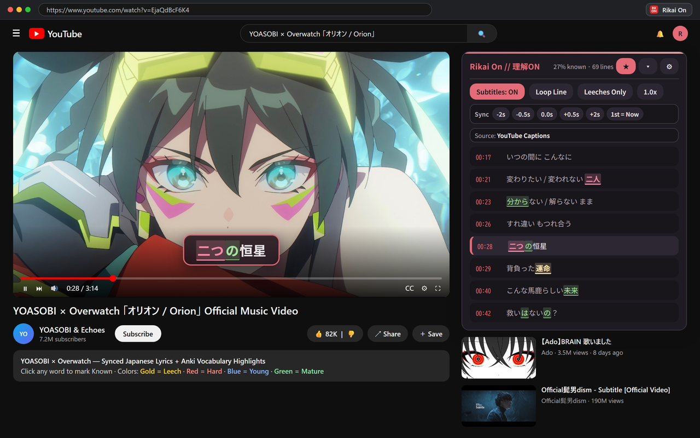
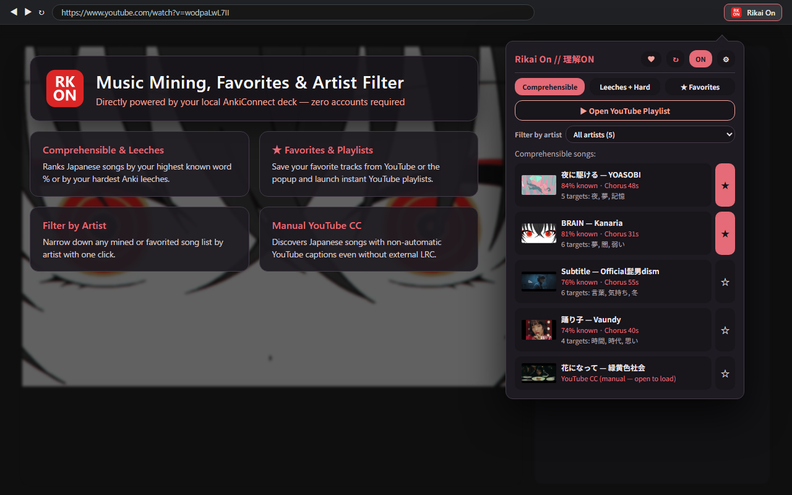

Live Anki Highlights
Highlights leeches, hard, young, and mature words directly inside YouTube lyrics and floating subtitles.
Synchronized Japanese lyrics on YouTube with local AnkiConnect highlights & music mining.
Highlights leeches, hard, young, and mature words directly inside YouTube lyrics and floating subtitles.
Fetches synced LRC lyrics via LRCLIB, Kugou Music, NetEase, or the video's own Japanese captions.
Rank songs by comprehension or leeches, bookmark ★ favorites, filter by artist, and open playlists.

